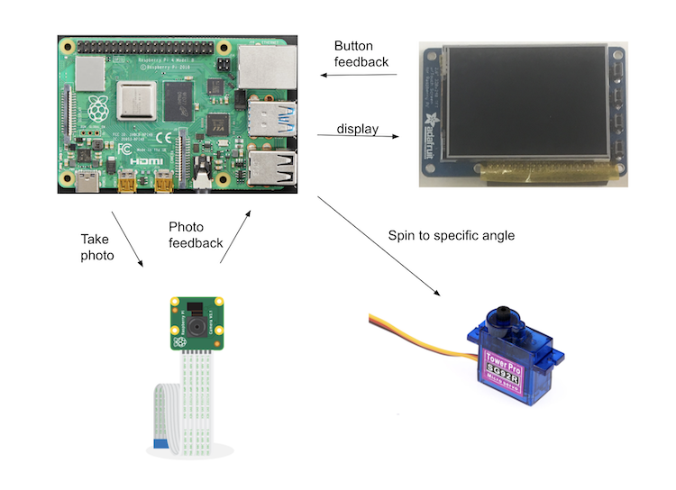

Introduction
Objective
Mahjong is a type of Chinese board game where four players are required for a game. Often times, people find it hard to always find four people for the game, often there are only three. Therefore, it became a problem that a fourth player is needed. To solve this problem, our team worked on the embedded mahjong player, so that it can play along as the extra player to help start the game.
Description
Our project first uses the Pi Camera to take photos of Mahjong tiles, and uses the photos to train the computer vision model, and then uses the trained model to identify the tiles. Next, the Mahjong algorithm would determine which tile it should play this round, and send the instruction to the PiTFT and servo to indicate the played tile. Displays and buttons on the PiTFT are also used as round controls.
Demo Video
Below is the link to our Project Demo Video:
Design and Testing
Our embedded Mahjong Player is mainly made up of four parts, the Raspberry Pi for main algorithm and operations, the Pi Camera afor taking photos of the Mahjong tiles, the PiTFT for display and button interactions, and the servo for played tile indication.
System block diagram
In terms of software design, our code comprises four primary modules: tile_classifier, camera, player, and integrated. The first module leverages Yolo-v9 for image classification. The camera module controls the Pi Camera. The player module contains algorithms that govern the moves of the bot player. The integrated module assembles previous three modules and collaborates with GPIO pins and the PiTFT to create an interactive bot player.
Tile Classifier
We developed these modules sequentially, starting with the tile classifier. Our objective was to train an image recognition model capable of identifying the suit and type of Mahjong tiles from photos shot with Pi Camera. We experimented with several open-source models, including MobileNet-v2, Yolo-v7, and Yolo-v9, as well as pre-trained models from Roboflow. The latter does target Mahjong tiles, however, it achieves only approximately 70% accuracy. We would like to much higher accuracy because we want to avoid scenarios where the bot player mistakenly identifies a winning hand due to incorrect tile recognition.
All tiles in a set of Mahjong
Yolo-v9 emerged as the most accurate, achieving nearly 100% accuracy. However, it is important that we believe the quality and quantity of our training data proved more decisive to our success than the model's inherent capabilities. We had generated substantial training data by manually photographing and labeling Mahjong tiles, producing around 150 original images. Then, using data augmentation techniques, we automated the rotation and lighting adjustments of these photos, ultimately expanding our dataset to approximately 1000 images. The training process involves running for 100 epochs on an RTX 4090, which took about 25 minutes. We now have a highly effective model that can detect all 14 tiles at once from a photo. These 14 tiles are to be the ones on the tile rack facing the bot player.
Camera installation facing the tiles
Pi Camera
Since the goal of the project is to shoot photos with Pi Camera, we utilized it directly to generate the training set. This ensures consistency in properties like resolution and light sensitivity. The camera module includes scripts to configure the Pi Camera. We employed the picamera2 library, which allows us to easily manipulate the Pi Camera to capture high-resolution images or to also display live image previews.
Player Algorithm
The algorithm that governs the player's moves uses reinforcement learning and assigns reward to the successful completion of a triplet or a couplet. A triplet in Mahjong is a sequence of 3 tiles or identical 3 tiles. To win in Mahjong is to have 4 triplets and 1 couplet. The player strategizes based on its current 14 tiles which one it wishes to get rid of with the goal of maximizing its future reward. In other words, it wishes to throw away a tile that is least contributive to the forming of a triplet or a couplet. The transition probability is defined in terms of the probability of receiving a specific tile in the next round. For a tile \(t\), since there are only 4 copies of any tile, this probability is:
$$\frac{4 - \text{copies of $t$ bot already hold}} {\text{total number of tiles remaining in the deck}}$$
Remaining tiles in the deck are the ones not held by any other player in the game nor have already been played by any player. Played tiles cannot be retrieved per the rules of Mahjong. Both copies of \(t\) bot already hold and total number of tiles remaining in the deck are properties of a specific state \(s\). That is, the state \(s\) encodes the tiles the bot currently hold, all the tiles played by other players, and all tiles remaining to be drawn from the deck. Therefore effectively, the probability can be written as \(P(t | s)\).
Then, to calculate the value of any state under a policy \(\pi\) (the target parameter to train), we use the following formula:
$$ V^{\pi}(s) = r(s, \pi(s)) + \gamma * \sum_{t \in tiles} P(t | s) * V^{\pi}((s \setminus \pi(s)) \cup {t}) $$
The value of a state indicates the bot's current advantage. The goal is to transition towards more advantageous states. With this formulation, we can apply reinforcement learning training techniques, the details of which we will not discuss here. Ultimately, the training process produces a policy that is a function of the state.
The prediction value for each tile, small value means less chance for this tile to exist to win
Servo control
When implementing the pointer to the tile being player, we first decided to use software PWM signal as we did in lab 3 of the class. We connected the micro servo with 5V power, Ground according to the datasheet of the servo, and connected the input signal to pin 26, which is the PWM pin clean to use on the Pi. We setup the pin as in lab, and tested out the duty cycle range for for controlling the servo. When duty cycle is between 3% to 12%, the servo will spin through 180 degrees. However, since our Mahjong rack only takes one part of the plane. We decided to use value between 5% and 9% for indication.
To allow the pointer point to the specific value, the tile index from the current list of identified tiles is being passed as an argument into the servo control function. Then we decided to use a mapping function to map the values of 0 through 13 index of the tiles to range 5% to 9% of the servo duty cycle.
During the testing stage of the pointer, we found that the pointer is not very accurate, and it is often pointing a bit to the side, or pointing between two tiles, which makes it hard to identify which tile is it playing. In addition, the servo seems to be shaky, and not able to stay stable during the pointing for even 2 seconds. After some help from the professor, we switched to hardware PWM, which generates steady waves and prevented the shaking. In addition, we also specifically tested out each tile to seaerch for a more specific value, and then directly mapped each tile to a specific duty cycle value in a dictionary to solve the accuracy issue.
All hardware installation
Integrated
The integrated module contains the following functions that bring together the software and hardware portions of this project:
- A script that automates the photo taking process, the passing of the photo to the inference model, and the generation of predicted results.
- A script that monitors and responds to user inputs on GPIO pins.
- A script that uses the PyGame library to control PiTFT displays and prompts users for inputs.
- A script that signals to servo degree of turn which matches the location of the tile the player decides to play.
The main script connects all these componenets together and produces the following procedure for each round of game:
- Displays to user ready status on the PiTFT. Prompts user to indicate readiness through pressing a GPIO pin.
- Once button is pressed, begin playing by:
- Taking a photo with the Pi Camera
- Infer the tiles in the photo by passing it to the tile classifier
- Decide on which tile to play through calling the player algorithm (also check if bot has won)
- Indicate with the servo and PiTFT display which tile it intends to play
- Wait for user to confirm the result. Then move to next round of game.
Full project station view
Describe testing you performed to confirm that development steps of the project performed as planned.
Results
Our project is generally able to achieve our initial goals. First the detection system is able to identify the Mahjong card in high accuracy. With our current trained dataset and the best YOLO 9 library, it is able to achieve success of nearly 100%. After identifying all 14 tiles on hand the Mahjong playing algorithm is also able to calculate for the best winning strategy of which tile to keep and which tile is the best to be ditched. So in most cases it is able toidentify the correct tile to play even the orders or the tiles are shuffled. The PiTFT is able to receive signals from the buttons to start the round, get ready and quit the game correctly. For display functionality, it is also able to provide correct indication of the current status of the game, the tile being played and some hints to help the users understand what to do next. Finally, the pointer is also able to accurately indicat the current tile being played.
However, the classification system had not been ideal, with a 6-8 second delay in detection and very sensitive requirement to lighting, it cannot deliver accurate results fast and if within an environment where setting is at the best. But in general, this still is an acceptable respond time for a game.
In addition, initially we plan to implement a robot arm where it not only points to the card being played, but also pushes or picks the tile, but due to timing and difficulty in implemenentation, this were not achieved and downgraded to a pointer only.
Conclusion
In conclusion, our project is able to let the robot become the fourth player with three other human players and together hold a game of Mahjong. It is able to successfully identify the rack of Mahjong tiles it currently holds and decide for the optimal winning solution.
The most crucial part of the project is the computer vision training, which took large effort not only to train it on a seperate server, but also takes research to find out the correct way to make it run on raspberry pi. We tried multiple different models online for accuracy, but then it did turn out that most models are extremely complicated and requires computational power to calculate that is too much for a raspberry pi. Therefore, we tried tranforming the orignal YOLO model into onnx format, which will be feasible to run on a raspberry pi.
Future Works
If given more time on the project, there are two main improvements we are looking for.
First improvement is on the indentification of the Mahjong tiles, where now it takes relatively long time to compute. We believe that there could be improvements such as running the camera with multi-core or multi-threading setup. Another possible implementation is that since the tiles get replaced one at a time for each non-winning rounds, we could within the algorithm only compute the new replaced tile identification, instead of reading all 14 tiles every single time.
The second improvement is on the pointer. If possible we would also like to turn it into a fully functional robot arm, where it picks up the tiles and then put them on the table just like how a human player would. This would help reduce the movement helps from the other human players as well.
Code
All code has been uploaded to Github repository.
Work Distribution
Yanny Zhu - rz367@cornell.edu
- Focused on software design
- Computer vision model optimization
- Mahjong algorithm optimization
Rachel Yan - sy625@cornell.edu
- Focused on hardware design
- GPIO and interaction design
- Servo motor control design
Budget
- Raspberry Pi 4B - $40.00 (provided)
- SG90R Micro Servo - $5.95
- Raspberry Pi Camera - $25.00 (provided)
- PiTFT Display - $34.95 (provided)
- Lego blocks - $50 (?)
- Chopsticks - $0 (free)
Total spent: $55.95